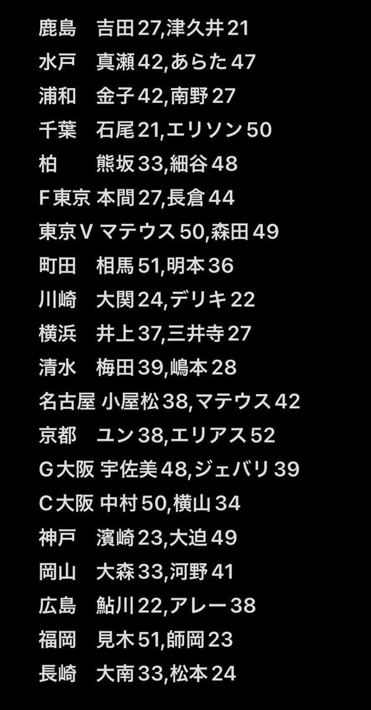
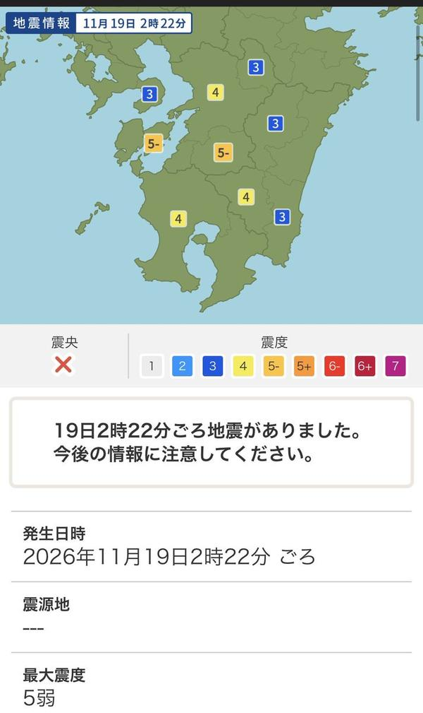
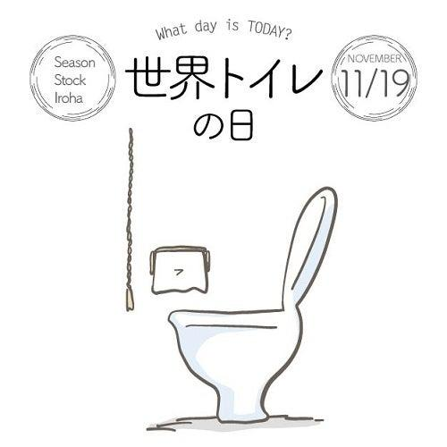
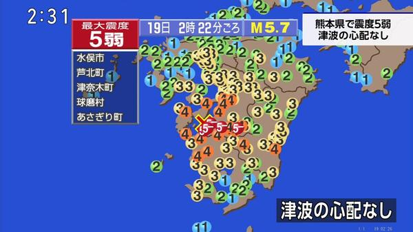
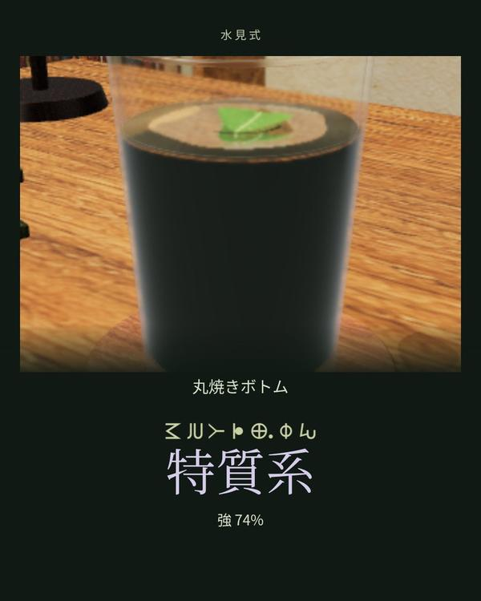

🇯🇵 日本の主要ニュース
🌍 世界の主要ニュース
トランプ氏、プーチン氏とも19日に個別会談へ米当局者によると、トランプ大統領はAPEC開催中の19日、3か国会談とは別にプーチン大統領と個別に会談する予定です。ウクライナ外相は「当事国抜きの決定は不可能」とけん制しています。
出典：ロイター
🤖 AIニュース
NVIDIA、中国へのAIチップ販売を停止ホワイトハウスの承認を得ていたにもかかわらず、NVIDIAは先端AIチップの中国向け出荷を止めました。フアン氏の退任後、暫定CEOが方針を示しています。
出典：The Verge
AIがJavaに深刻な脆弱性を発見PHPの脆弱性を見つけたのと同じスタートアップが、AIを使ってJavaに重大なバグを発見。銀行や病院などのシステムが乗っ取られるおそれがあるとされます。
出典：BBC
💻 PC・ガジェットニュース
🔥 Xのトレンド（日本）
ジャンルで絞らず上位20件を掲載。「未確認」はX上の投稿だけを根拠にしたもので、報道機関による裏付けはありません。
18日に始まった『原神』×マクドナルドの初コラボ企画。公式投稿にこのタグを付けて19日中にリプライすると、原神デザインのマックカードが当たるキャンペーンで、参加投稿が殺到しています。
出典：マクドナルド公式X／電撃オンライン
めざましテレビとディズニーの企画クイズ「ミッキーが船長から命じられたことは？」。引用投稿で答えを書くとグッズが当たり、「C：じゃがいもの皮むき」と答える投稿が目立ちます。
出典：めざましテレビ公式X
KONAMIのサッカーゲーム「Jクラ」で、サポーターが選んだ各クラブ2人・計80人の新カード「エクスペクテッドプレーヤー」が登場。ゲーム内の共有投稿の定型文にこのタグが入っています。
出典：Jクラ公式X
Jクラの対戦募集の定型文「上のURLをタップすると『Jクラ』が起動します」から。同じ文面の投稿が大量に流れています。
⚠ 未確認（X情報のみ）
Jクラで「フレンドリーマッチをやろう！マッチングコード[○○○-○○○]」と対戦相手を募る投稿が急増しています。
⚠ 未確認（X情報のみ）
同じくJクラの対戦募集の定型文から。新カード登場で対戦募集が増えています。
⚠ 未確認（X情報のみ）

新カード「エクスペクテッドプレーヤー」の登場で、ガチャの結果やJ1・J2の登場選手まとめなどの投稿が増えています。
⚠ 未確認（X情報のみ）
13年ぶりの新作「グランド・セフト・オートVI」が18日に発売。海外の批評家から「傑作」と絶賛されていて、「GTA6やりたい」「PC版はよ」という投稿があふれています。
出典：BBC
FM802の朝の番組（DJ大抜卓人さん、通称「おはたく」）のクイズ企画とみられ、リスナーが「2番」などと回答を投稿しています。
⚠ 未確認（X情報のみ）

19日午前2時22分ごろ、熊本県天草・芦北地方などで震度5弱を観測。深夜の揺れに驚いた声や、余震への注意を呼びかける投稿が広がりました。
出典：NHK

11月19日は国連が定めた「世界トイレの日」。安全なトイレを使えない人々の問題を考える日で、記念日の投稿が並んでいます。
⚠ 未確認（X情報のみ）

熊本県の地震で深夜に緊急地震速報が出され、テレビ画面の写真や「熊本震源」の投稿が相次ぎました。
出典：NHK（地震）
木曜朝恒例の「もくもくもくようび〜」の顔文字コピペや、朝のあいさつの投稿です。
⚠ 未確認（X情報のみ）

『HUNTER×HUNTER』の「水見式」診断。「○○は『特質系』でした。念の強さ：74%」という結果を共有する投稿が広がっています。
⚠ 未確認（X情報のみ）
「#めざましディズニー」のクイズの選択肢C。正解だと予想して答える投稿が集中しています。
⚠ 未確認（X情報のみ）
歌い手グループ「いれいす」のいふさんの朝のあいさつ「おはいふにょん」に、ファンが返信しています。
⚠ 未確認（X情報のみ）
15と同じく、めざましディズニーのクイズの回答（表記違い）です。
⚠ 未確認（X情報のみ）
1956年11月19日に東海道本線の全線電化が完成したことにちなむ記念日。電車や車両の写真が多く投稿されています。
⚠ 未確認（X情報のみ）
M!LKの佐野勇斗さんが、日本テレビ系の1月期日曜ドラマ『ディアマミー 俺たちの母ちゃんは、殺された。』で民放GP帯の連続ドラマに初めて単独主演します。お祝いの投稿が集まっています。
出典：映画.com
高市首相がAPECで深センに到着した際、政府専用機のタラップの1段目に大きな段差があったとする投稿が拡散し、「嫌がらせだ」と反発する声が出ています。歓迎に差があったことは朝日新聞や時事通信も報じていますが、段差の意図は確認されていません。
出典：朝日新聞・時事通信（歓迎の差）
Grok Bot がまとめました。